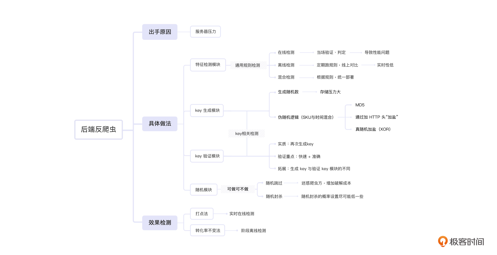

- 00 开篇词 如何突破“爬虫反爬虫”内卷之怪现状？.md.html
- 01 爬虫需求的诞生：我们是正经的软件工程师.md.html
- 02 爬虫的内卷和黑化：我们变得不正经啦.md.html
- 03 反爬虫的发展以及展望：我们也不是什么正经工程师.md.html
- 04 爬虫的首轮攻势：如何低调地拿到自己想要的数据？.md.html
- 05 反爬虫的应对之策：通用且基本的检测规则是什么？.md.html
- 06 爬虫攻势升级：分布式的意义在哪里？.md.html
- 07 反爬虫升级：如何判定你是个真人？.md.html
- 08 博弈的均衡：如何对抗道德的沦丧和人性的扭曲？.md.html
- 09 反爬虫概述（一）：高收益的后端能做哪些基本的事情？.md.html
- 10 反爬虫概述（二）：无收益的前端是怎么进行key处理的呢？.md.html
- 11 反爬虫概述（三）：前端反爬虫是怎么做信息收集的？.md.html
- 12 反爬虫概述（四）：前后端都不合适的时候如何进行处理？.md.html
- 13 反爬虫基础理论：这是唯一一节严肃的纯理论课.md.html
- 14 低耦合：如何快速下线反爬虫系统？.md.html
- 15 规则引擎：如何快速响应突发的爬虫需求？.md.html
- 16 验证爬虫：我到底要不要百分百投入？.md.html
- 17 招聘篇：如何写一个合适的JD？.md.html
- 18 如何搞定老板（上）：如何编造虚无缥缈的OKR？.md.html
- 19 如何搞定老板（中）：如何组建团队.md.html
- 20 如何搞定老板（下）：团队考核怎么做？.md.html
- 加餐 反爬虫的专家级鉴别力：用户习惯检测.md.html
- 春节加餐01 破解还是不破解，这是一个问题.md.html
- 春节加餐02 真实世界里，小心屠龙勇士变恶龙.md.html
- 春节加餐03 低调驶得万年船.md.html
- 答疑课堂 爬虫反爬虫调试对抗技巧以及虚拟机详解.md.html
- 结束语 达到理想不太易.md.html
- 捐赠
09 反爬虫概述（一）：高收益的后端能做哪些基本的事情？
你好，我是DS Hunter。从这一讲开始，我会给你讲一讲不同研发职能做反爬的方向和技巧。
一般来说，公司会将Web站点分为前端、后端两部分，也就是前后端分离。必要的时候，可能还会做BFF。后端做反爬，是一件自然而然的事情，很多公司的反爬虫都是后端开始做的。当后端力不从心之后，才开始给前端做。前端力不从心了呢？就开始由BFF做了。
所以在课程中，我们也同样按照这个逻辑，先从后端开始说起。我会给你介绍下后端进行规则过滤的基本方法，并带你进入正式的key生成与验证斗争中，希望你能在这个过程中，真正理解后端反爬虫的作用以及成本分析逻辑。另外在这节课的最后，我还针对爬虫的计算力进攻进行了拓展，如果你有精力，也可以随着文字一起思考。
现在，我们就从后端出手的原因开始说起吧。
后端出手的原因：服务器压力
我在上面提到了，后端做反爬是一件自然而然的事情。所谓的“自然”，其实是由于服务器（也就是后端）顶不住爬虫的压力才做的。后来慢慢有经验了，才开始做一些类似“提供假信息”、“没有反爬措施的反爬虫系统”这种奇奇怪怪的封杀操作。这个时候，后端出手的原因也慢慢不再仅限于减轻服务器压力，而是开始加入商业上的博弈了。
后端反爬虫的具体做法
首先你要知道，线上爬虫其实很多，不仅仅有竞对，还有一些练手的爬虫。这些爬虫特别可怕，它们往往极不专业，很容易把服务器打挂。这些爬虫，你可以尽情封杀。
而另一些竞对爬虫则完全不同，如果真的封杀了，即使胜利了，也会导致更多的问题。说是“皮洛士式的胜利”也不为过。因此两者要使用不同的策略“区别对待”，分开处理。这一讲，我们就主要针对竞对爬虫的骚扰给出具体的解决方案。
这里我为你提供了四种具体做法，分别是特征检测模块、key生成模块、验证模块和随机模块。它们像处于一个有输出又有辅助的团队一样，相互独立，又彼此协作，共同成为了反爬虫路上的有力助手。在实际应用中，我更推荐你综合使用。
特征检测模块
在05讲中，我提到了多种的特征检测，帮助你定位具体检测的内容。精准定位，才会事半功倍。这一讲，我们就来看看一些在后端进行的特征检测（例如HTTP级别检测中的HTTP Header），它们的具体实现方式是什么样的。这里的具体实现方式分为三种：在线检测，离线检测，混合检测。我们一个一个来看。
- 在线检测
在线检测，顾名思义，用户请求进来的时候，直接就检测特征，当场判定结果。就像现在的健康码一样，当场出码，当场判定，过期不看。
这里在线检测的做法，其实就是写个算法，针对近期的流量做样本，合并做一个集合。在集合中取特征平均值，最后拿当前流量做比较就可以了。如果后续单个流量过来后，特征不符合统计分布，那么这个流量就是有问题的。
不过这里会存在两个问题：样本本身会是爬虫吗？取平均值的复杂度会不会过高？
针对第一个问题，我们之前提到过，样本要从爬虫少的地方提取，例如订单页，进来就付钱。取付钱接口的流量，相对就纯净很多。如果对方想攻击这个样本，那代价可是太高了。
针对第二个问题，取平均值本身是一个O(n)复杂度的事情。因此，当流量高的时候，自然会变慢。不过，变慢的前提是，你使用的“近期的流量”，是最近一段时间的流量，例如最近一分钟。
如果反过来，你的流量池是一个先入先出的队列，那么其实复杂度就没那么麻烦了，因为流量数将是一个定值。而线上系统变慢的情况还是不可避免的。但是，系统性能问题对于很多职能部门来说是不可容忍的：要知道，其他团队费尽心思才节约出一点时间，被你一下子全耗光了，别人一定会和你有争议的。
针对性能问题，我们会有离线检测来解决。
- 离线检测
离线检测，顾名思义，就是把流量放到线下，抽时间慢慢算，算好了给线上用就可以了。通常，我们对流量规则的实时性要求并没有特别高的时候，就会采取这种方法。
这里我们提到了一个新的词，规则。这个词我们后续也会经常使用，也会和其它的词进行搭配，比如规则引擎。什么是规则？这里我们试着下个定义。
规则（rule）：- - 使用任何技术手段，对线上请求特征按照指定的条件（condition）或方法（callback）进行检测验证，并执行指定操作的过程。在部分系统里，这个也被称为过滤器（filter）。
回到离线检测的部分。其实，离线检测和在线检测的方法是一样的，但是操作上会有些区别。操作时，你可以把固定时间间隔（例如一分钟）的流量放到一个池里面，然后定期跑计算规则，例如上面提到的平均值，或者IP频次，都可以。接着再把规则推到规则引擎去，线上系统直接使用规则引擎产生的规则即可。
这里你应该可以看到，效率大大提升了，但是实时性会大幅下降。
回到我们这门课常用的一句话：小孩子才做选择，大人全都要。是的，我们还可以做混合检测。
- 混合检测
混合检测其实是针对不同的规则，使用不同的检测模式，并统一部署。
有的规则对实时性要求很高。例如，IP频次，阈值到达100，你就封杀。结果因为使用了离线规则，一分钟后才起作用，那一分钟内人家直接干上个一万次请求，这时候你封杀人家，人家直接走就可以了呀，一万次够用了呀。
有的规则对实时性要求不高，但是计算量非常大，那么就妥妥地走离线检测。例如HTTP Header，同一个爬虫上一分钟犯的错误下一分钟还会犯。这样的情况下，抓慢点也没关系，亡羊补牢嘛。而只要抓到了，对方又没办法立刻变更策略，他要改代码，反应更慢。因此可以走离线。
此外，离线策略不一定非得是一分钟，也可能是跑个一天，这种大规模策略甚至可以放在业务低谷期来操作，我们可以做一个在线离线混合部署，最大规模降低成本。
也就是说，白天，业务高峰，跑在线策略。晚上，业务低谷，跑离线Job，机器闲着也是闲着，低谷期利用起来反而提高了利用率，跑完第二天还是可以接着用。成本越低，从另一个角度来看也就是收益越大，后续和财务谈ROI也更有底气。
key生成
从这里开始，我们讨论的就是key的相关检测了。key生成可以认为是反爬虫的基本操作了，市面上几乎所有的反爬虫系统都逃不开这一套：下发加密key，客户端执行解密，然后上传解密后的key，服务端验证是否合法。虽然做法千差万别，但是原理都没什么创新。
这个做法和我们日常生活里面验证身份的流程非常相似，这相当于给每个人发一个员工卡，上班时要用员工卡验证身份。而我们主要的工作，就是验证员工刷的是不是发的那张卡。
你可能会疑惑，为什么验证模块不和key生成模块放在一起呢？其实，出于服务器压力的分配问题，生成key和验证key不一定在同一个集群实现。这样可以实现解耦，避免强依赖的产生，导致出问题的时候无法关闭系统，不得已进行熔断操作。因此，我们很可能需要一个独立的验证模块来进行key的验证操作。
那在key生成的这个版块，我们只讨论一个问题：如何生成一个key？
首先，生成一个随机数就可以了吗？如果生成随机数，那么必然要面对存储问题。不然在验证key的时候，你如何判断这个是自己生成的那个，而不是客户端乱编了一个呢？
因此，我们需要使用的，是一个伪随机的逻辑。也就是说，要有随机性，但是也要有规律。随机性是对爬虫来说的，有规律是对验证来说的。基于这样的操作方向，我们需要进行的就是 SKU与时间混合的操作了。
SKU（Stock Keeping Unit，最小存货单位），也就是我们常说的商品ID。我们前面论证过，反爬虫方会在指定时间内进行价格的变化，那么如何在不断变化的价格中添加一个伪随机的key生成逻辑呢？我一步步来说。
首先，一个比较简单的key生成办法是：
md5(sku+current_hour)
这样，我们就实现了当前商品当前小时内key不变，那么验证模块也就可以做到针对指定的key。
你可能会觉得，一个商品key一直一样，是很容易被抓的。但实际上，这不一定会被抓，因为前端解密key会很复杂。其次，指定商品一小时又不变价，他没有重复抓的必要。
这里可能会出现的漏洞，反而是很容易被抓“规律”。对方多试几次，很可能猜出你的后端加密规则！怎么办呢？我们都知道，MD5是公开算法，那么其实防止被抓规律的做法就很简单了：加盐。
具体加什么呢？一个比较阴险的做法，是加检测规则。例如，加http头。这样，每个人就会变得不一样。这个时候我们的伪代码就变成了：
// fingerprint：通过用户特征，计算出一个无重复的指纹。
// 用于给md5函数加盐
md5(sku+current_hour+fingerprint(http-header))
这样，每个用户的header不一样，那么每个人的key就不同。
你可能会问：但是，爬虫一般懒得改header，他实际上很可能还是每次拿到一样的key啊？
没问题，这个时候，我们上面提到的真随机就可以派上用场了。真随机虽然不好检测，但是他可以用来加盐。具体做法大概是：
var left = md5(sku+current_hour+fingerprint(http-header))// 32位
var right = md5(random())// 取一个随机值，并md5掉，用于混淆key
var result = xor(left, right)+right// 两个key异或作为新key的left，right不变。
这里的XOR是一个全字段异或的循环。为什么要这样操作呢？因为32位的key就这样变成了64位，并且规律性极差。你验证key的时候呢，取前32位和后32位，再异或回来，就能拿到原来的left和right了。right是随机值，丢弃掉。left是key，验证即可。这样就实现了，对爬虫随机，对自己有规律。
验证模块
验证模块是反爬虫的核心，下发的key，就是为了传回来做验证。在验证模块，我们的核心就是：如何快速准确地验证key？
key验证其实就是key再次生成的过程。我们知道，下发key和验证key发生在同一session内，那么它们的上下文就是一致的，我们可以直接再生成一次key，与请求带来的key比对即可。
这时候你就会发现了，这种伪随机key的最大好处就是：无需存储，所以没有存储压力！因此效率极高！到这里，我们就解决了“快速又准确地验证”这个难题。
这里，我可以给你拓展一下。其实，有些拦截操作还可以放在生成key那里，而不是验证key这里。具体怎么做呢？举个封杀某个header的例子吧。如果某个HTTP Header有问题，那么你在生成key的时候，可以有意修改掉一位。也就是说，你可以假装不知道这个请求是来自爬虫的，然后直接生成一个错误的key给客户端。那么，回头这里在不受任何影响直接生成key的时候，之前生成的那个key是一定验证不过的。这样，对方还以为自己的key破解有问题。
那么，拦截操作放在生成key那里，和放在验证key这里，有什么区别吗？
区别很明显，生成key和验证key因为算法一致，所以可以放在两个集群。而放在生成key那里，是可以缓解验证key集群的压力的。要知道，虽然你生成key，也验证key，但是实际上很多低级爬虫是不带key直接打验证服务器的。因此，验证模块的压力天生比生成的地方大一些，所以，我们要减少操作，避免崩溃。而生成key的崩溃了，我们可以简单地关闭验证模块来实现熔断。而验证模块崩了……你确定你一定关得掉验证模块吗？它可崩了啊！
随机模块
随机模块，也就是随机筛选。它是验证模块的一部分，不过，“做随机筛选”这件事是一个可选项。所以这里给你单独讲解。
在随机模块，可能会出现两种做法。首先，随机跳过，其实就是在校验的时候，我们可能随机跳过一部分请求，不校验。第二种做法，随机封杀，也就是说我们也可能随机封杀一部分请求。至于冤枉真用户？冤枉就冤枉了。两种做法看起来都有些不可思议，但是它们还是有着实际意义的。我们一个个来看。
- 随机跳过
首先，随机跳过。随机跳过本身并不能拦截爬虫，但是它有一个战略意义，就是让爬虫方困惑，增加破解成本。
对于爬虫方来说，反爬虫方给出100%的假数据，和给出20%的假数据，其实是没什么区别的。哪怕只有5%的假数据，这一整批数据他都不敢用的，毕竟不知道哪些是假的。
这里我给你拓展一个情境，那就是降低假数据概率，会导致一个情况：爬虫方有可能在拿到真数据的那一瞬间，就觉得自己胜利了，然后代码直接上生产。这样生产上实际拿到的数据还是不准的。
这时候你会疑惑一件事情：那，我要是给太少假数据了，岂不是没什么意义？那我给多少假数据合适呢？
我个人的习惯是真数据占比数字通常设置为79.4%，其余的就是假数据了。
这么奇怪的数字是怎么定下来的？
通常来说，爬虫方会对自己的代码再三确认，也就是说，比较谨慎的爬虫工程师，试个三次发现没问题，也就被deadline给逼上线了，不会无休止地测下去的。而79.4%这个数字好就好在，连续三次真数据的概率，如果刚好是0.5，那就是79.4%的三次方，那么对方其实测试三次，有一半的概率是拿到真数据，就会容易误以为自己胜利了。而假数据的概率超过20%，也不低了。
所以这个数字非常合适。当然，这是在大规模勾心斗角的爬虫中使用的数据，实际上检测到是小爬虫的话，你可以不考虑随机跳过的事情，100%封杀也没问题。
- 随机封杀
随机封杀，依然是一个大型爬虫专用的技术，它的关键词只有一个，就是“低”，也就是随机封杀的概率设置会尽可能低一些。为什么呢？
首先，用户是会被误伤的。其次，你可能会说，整体概率设置低了之后，爬虫方被随机被检测到的概率也很低。
但是你要赌的是什么呢？是对方不小心抽检到了这个数据，并开始质疑爬取的数据有问题。而厉害的对手很可能实际爬的没啥问题，他又找不出证据来说明为什么这个数据不对，这很容易引发对方的产品经理和研发之间的争执，最终摩擦起火都有可能。
当然了，如果摩擦起火之类的事情没有发生，那……好像你也没损失什么对不对？所以，概率设置得低，也是可以的。
后端反爬虫的效果检测
完成了一系列的反爬虫措施之后，当然要复盘一下效果了。而反爬虫效果检测，一直以来都是个难题。因为你不可能直接去问爬虫：嘿兄弟，你抓到了多少假数据？就算你去问了，爬虫也得问：嘿，兄弟，真数据给我，我验证一下？
所以，我们只能通过一些办法，侧面估算出误伤率以及爬虫占比。
从技术角度来说，通常有两种方式，打点法和转化率不变法。前者用来检测误伤率，后者用来检测爬虫量。
所谓打点法，就是在有前后顺序的请求上，一个做反爬，一个不做反爬。举个例子，商品价格页面做反爬，商品付款页面不做反爬，毕竟你也不怕爬虫来给你付款。
这样，在价格页面检测到爬虫后，就写入一个Cookie，相当于给所有爬虫打一个标签。理论上说，普通用户是不可能有这个Cookie的。那么，我们在付款页面检测这个Cookie，能拿到它吗？显然是不应该拿到的，因为用户是无Cookie的。那么这里检测到多少Cookie，就证明有多少用户被误伤了。
而转化率不变法，则是另一个操作，我们首先定义一下转化率：订单量除以UV，就是UV的转化率。当然订单量可以先做用户去重，这个就看业务的要求了。这里我先假设，转化率只与网站的质量有关，与其他因素无关，或者至少关系很小。大多数情况下，商品在全天24小时内，转化率不变。
在这个假设下，就可以拉一个流量曲线，再拉一个订单曲线，加权一下试着让两者重合。但是这两者由于爬虫的存在一定是很难重合上的。你可以先想一下，你们的低谷期，也就是订单为0的时间，这个时候不管转化率是多少，UV都应该接近0对吧？那么，我们就可以判定，这部分的流量就是全爬虫。
但是扣除掉等量的流量后，订单曲线和流量曲线如果还是很难重合，那么这个不重合的原因，就是不稳定爬虫导致的。这个时候，你就可以一点一点扣流量了：慢慢估算出真实的转化率，进而估算出每个时间段的爬虫。当然，这种做法永远是估算，你不要指望精确计算出爬虫量。
根据上面的打点法和转化率不变法的做法指导，我们可以做离线检测和在线检测了。
实时在线检测：打点法
实时在线检测主要用于监控、熔断。而打点法是用于进行误伤检测的，也就是说，它能迅速地识别到用户被误伤、可以做自动熔断反爬虫的功能。因此，这里更推荐用打点法。
需要注意的是，由于是实时检测，对读取的实时性要求很高，就不能走离线库了，需要用在线库，比如常规的MySQL。不过，那服务器顶得住吗？
顶得住的。你可以回忆下打点法，实际上拦截打点，是在订单处拦截的，所以数据量是订单量乘以误伤率。这样一来，实际上没有多少数据。而如果真的出现了顶不住的情况，那就证明误伤太多了，可以直接先熔断掉反爬虫再说。
如果说做爬虫最重要的是低调，那做反爬最重要的就是：安全。不惜一切保证安全。
说得更直白一点就是：怂。
阶段离线检测：转化率不变法
其实，打点法和转化率不变法都是可以做离线检测的。但是这里主要推荐转化率不变法。
转化率不变，本质上是一个计算，这个计算需要全天的数据，因此全天数据都拿到之后再跑是没问题的。因此，计算不需要实时，也无需关注查询性能，最终走一次Hive查询即可。每天一次，按公司最低配置要求就行。此外，即使存储丢失了也不是什么大事，一切给成本让路。
至于计算时间，和上面特征检测部分的离线检测一样，是可以放在晚上的。同时，整个的效果检测也是可以使用在线离线混部的方式的。也就是说，你可以把统计功能和线上机器部署到一起，晚上用线上机器的剩余计算力进行离线检测。
小结
最后，我来给你做个总结。这节课，我们针对后端的反爬虫动作进行了详细的探讨。首先，后端因为天生忍受爬虫压力，主动进行了反爬虫的研发任务。那么针对爬虫进攻的目的与做法的不同，我们的应对策略也是不同的。
在中间的部分，我们一共提到了四种后端反爬虫的具体做法，它们彼此独立，但又相互配合。除了常规的特征检测我们一定要在后端做掉以外，还可以通过后端生成key并验证key来实现请求的身份校验。当然，一些勾心斗角的价格操作（即02讲中那些奇奇怪怪的价格迷惑方式）也可以在这里处理掉。而第四种反爬虫做法，“随机模块”，也是你的一个反爬备选项。
当然，别忘了在进行了那么多的反爬虫动作之后，后续的反爬虫效果检测也是后端义不容辞的责任之一。
这里，我也给你提供了一张这一讲的脑图来进行复习。针对四种动作的“独立又配合”的性质，我给每个动作增加了一个小的标签，希望能够帮助你理解它们之间微妙的关联。

下一讲，我们可以看下，前端这个反爬虫的主战场，是如何与爬虫正面刚的。
思考题
好了，又到了愉快的思考题时间！还是三选一的老规矩，你可以任选一个问题在留言区和我一起讨论。
- 关于随机跳过爬虫的问题，会导致拦截率的下降，如何与老板解释这个事情呢？
- 除了MD5伪随机的方式，你还能想到什么办法，实现不存储key？
- 在线离线混合部署，你认为是应该部署到同一台机器上？还是应该用两个Docker共享资源？它们的优缺点分别是什么？
期待你在评论区的分享，我会及时回复你。今天诗句的下方，也有关于计算力进攻的探讨，如果你有精力，也可以和我一起在评论区讨论。反爬无定式，我们一起探索。

扩展：难以破解的计算力进攻
爬虫方的计算力攻击是个很尴尬的事情，目前来讲，并且没有真正完美的防范措施。
我们都知道，反爬是需要消耗计算力的。虽然和爬虫相比，我们可以做到少消耗资源，但是还是不能做到不消耗资源。
举个例子，生成key的服务，虽然我们上面介绍的MD5伪随机，已经是优化过的方案了，最早是走存储key的，可以做到真随机。
但是，如果爬虫知道了这个逻辑，他拼命地访问生成key的接口生成key，访问之后也不验证，单纯地拼命去消耗。这样的进攻会导致大量的key被生成、存储，但是没有人消费，最终积压在存储系统里，压爆反爬虫系统。
也许你会继续问： 这样对爬虫又什么好处吗？
当然有，反爬虫系统挂了，结果就是会自动熔断，系统以无反爬的状态运行。就像每天调戏保安，保安累得全睡着了，小偷不就可以随便进去偷东西了吗？
所以，这也是我们采取MD5的伪随机key的主要原因。
除此之外，你可以压测一下自己的反爬系统，看一下哪里是系统瓶颈，任何一环被打挂了，爬虫都能肆意妄为，这是一个很可怕的事情。
也许你会说：我们是不是可以对这一切做一些防范？比如，拉取key的接口做些什么措施，让爬虫无法来乱搞事情？
嗯？有没有感觉这是个递归的死结？你说的是不是给反爬虫系统做一个反爬虫系统？那么这个给反爬虫系统做保护的反爬虫系统，又由谁来保护呢？
所以，我们可以做一些基本的防护，比如规则封锁。但是指望完全防护住，注定是一个不现实的想法，需要早早放弃。
© 2019 - 2023 Liangliang Lee. Powered by gin and hexo-theme-book.